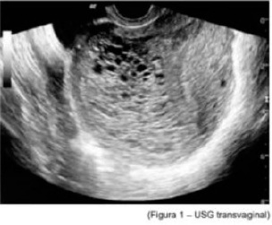
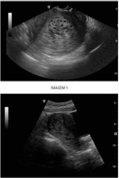

Questão 1 · Obstetrícia · Sangramento primeira metade · 4000185676Na anamnese, gestante com idade gestacional estimada em 8 semanas refere sangramento genital vermelho vivo com cólicas que cessou após eliminação de "bola de carne" pela vagina. Ao exame: colo impérvio ao toque, com discreto sangramento em "borra de café" em dedo de luva. Nesse caso, a principal hipótese diagnóstica é:
A Abortamento retido.
B Abortamento completo.
C Ameaça de abortamento.
D Abortamento inevitável.
E Abortamento incompleto.
Questão 2 · Quadro clínico · Diagnóstico · 4000184627Adolescente de 15 anos, encaminhada ao pronto atendimento após quadro de desmaio, sangramento genital discreto e dor pélvica intensa. Paciente relata atraso menstrual há 3 meses. Nega uso de métodos anticoncepcionais. Ao exame: muito ansiosa, descorada ++/ 4+. PA: 80x40mmHg e FC: 134bpm. Abdome distendido e doloroso. Não foi auscultado batimentos cardíacos fetais. Ao toque colo amolecido, pérvio, sangramento discreto. Nesse contexto, assinale a alternativa que apresenta o PROVÁVEL diagnóstico dessa paciente.
A Mola hidatiforme com sinais de hipertireoidismo descompensado.
B Gestação tópica com óbito fetal.
C Planceta prévia.
D Gravidez ectópica tubária rota.
Questão 4 · Obstetrícia · Gestação ectópica · 4000184226Uma gestante de 9 semanas e 5 dias, datada pela última menstruação, procura atendimento por apresentar sangramento vaginal em pequena quantidade, há dois dias, associado à dor em região hipogástrica de intensidade moderada. Ao exame físico, sangue, em pequena quantidade, coletado em fundo de saco vaginal, sem sangramento ativo, dor intensa no toque vaginal, com colo impérvio. Abdome plano, ácido, dor à palpação de fossa ilíaca direita. Os sinais vitais são: PA: 100x60 mmHg, FC 80 bpm, stO₂ 98%. Tendo em vista esse caso clínico e os conhecimentos médicos correlatos, julgue o item a seguir. Solicitar beta Hcg quantitativo não ajudará a elucidar o diagnóstico.
A Certo.
B Errado.
Questão 5 · Obstetrícia · Gestação ectópica · 4000184225Uma gestante de 9 semanas e 5 dias, datada pela última menstruação, procura atendimento por apresentar sangramento vaginal em pequena quantidade, há dois dias, associado à dor em região hipogástrica de intensidade moderada. Ao exame físico, sangue, em pequena quantidade, coletado em fundo de saco vaginal, sem sangramento ativo, dor intensa no toque vaginal, com colo impérvio. Abdome plano, ácido, dor à palpação de fossa ilíaca direita. Os sinais vitais são: PA: 100x60 mmHg, FC 80 bpm, stO₂ 98%. Tendo em vista esse caso clínico e os conhecimentos médicos correlatos, julgue o item a seguir. É importante afastar a possibilidade de gravidez ectópica.
A Certo.
B Errado.
Questão 6 · Obstetrícia · Sangramento primeira metade · 4000184223Uma gestante de 9 semanas e 5 dias, datada pela última menstruação, procura atendimento por apresentar sangramento vaginal em pequena quantidade, há dois dias, associado à dor em região hipogástrica de intensidade moderada. Ao exame físico, sangue, em pequena quantidade, coletado em fundo de saco vaginal, sem sangramento ativo, dor intensa no toque vaginal, com colo impérvio. Abdome plano, ácido, dor à palpação de fossa ilíaca direita. Os sinais vitais são: PA: 100x60 mmHg, FC 80 bpm, stO₂ 98%. Tendo em vista esse caso clínico e os conhecimentos médicos correlatos, julgue o item a seguir. O quadro se trata de uma ameaça de aborto, sendo necessário solicitar ultrassom ambulatorialmente e indicar progesterona.
A Certo.
B Errado.
Questão 7 · Obstetrícia · Sangramento primeira metade · 4000184222Uma gestante de 9 semanas e 5 dias, datada pela última menstruação, procura atendimento por apresentar sangramento vaginal em pequena quantidade, há dois dias, associado à dor em região hipogástrica de intensidade moderada. Ao exame físico, sangue, em pequena quantidade, coletado em fundo de saco vaginal, sem sangramento ativo, dor intensa no toque vaginal, com colo impérvio. Abdome plano, ácido, dor à palpação de fossa ilíaca direita. Os sinais vitais são: PA: 100x60 mmHg, FC 80 bpm, stO₂ 98%. Tendo em vista esse caso clínico e os conhecimentos médicos correlatos, julgue o item a seguir. Indicar curetagem devido ao aborto em curso.
A Certo.
B Errado.
Questão 8 · Obstetrícia · Sangramento primeira metade · 4000184221Uma gestante de 9 semanas e 5 dias, datada pela última menstruação, procura atendimento por apresentar sangramento vaginal em pequena quantidade, há dois dias, associado à dor em região hipogástrica de intensidade moderada. Ao exame físico, sangue, em pequena quantidade, coletado em fundo de saco vaginal, sem sangramento ativo, dor intensa no toque vaginal, com colo impérvio. Abdome plano, ácido, dor à palpação de fossa ilíaca direita. Os sinais vitais são: PA: 100x60 mmHg, FC 80 bpm, stO₂ 98%. Tendo em vista esse caso clínico e os conhecimentos médicos correlatos, julgue o item a seguir. Indicar laparotomia de urgência por gravidez ectópica rota.
A Certo.
B Errado.
Questão 9 · Abortamento · Obstetrícia · 4000183443Paciente primípara na 8ª semana de gestação procurou a emergência obstétrica com queixa de sangramento e dor em baixo ventre tipo cólica. Ao exame, no toque vaginal, percebeu-se o colo uterino pérvio e presença de sangramento. Baseando-se em evidências atuais, qual das opções terapêuticas abaixo é a menos recomendada?
A Curetagem uterina
B Aspiração manual intrauterina
C Misoprostol
D Mifepristone
E Expectante
Questão 10 · Obstetrícia · Sangramento primeira metade · 4000183145Paciente com atraso menstrual de 7 semanas, assintomática, realiza ultrassom obstétrico inicial, visibilizado saco gestacional tópico e regular, embrião vivo compatível com a idade gestacional, vesícula vitelínica presente, ausência de áreas de descolamento ovular. Em região anexial, visibilizada formação cística anecoica de aproximadamente 6 cm de diâmetro, com reforço acústico posterior, sem septos ou áreas sólidas, vascularização periférica exuberante ao estudo Doppler. Frente a esses achados, qual é a conduta recomendada?
A Expectante, reavaliar imagem anexial em ultrassom seriado.
B Laparotomia exploradora ainda no 1º trimestre da gestação.
C Videolaparoscopia eletiva após a 12ª semana de gestação.
D Solicitar ressonância nuclear magnética e marcadores tumorais.
Questão 11 · Obstetrícia · Sangramento primeira metade · 4000182969Secundigesta com 8 semanas de gestação comparece para consulta pré-natal em unidade básica de saúde, referindo há um dia dor tipo cólica em baixo ventre, acompanhada de sangramento vivo em pouca quantidade. A conduta correta é
A prescrever progesterona micronisada, devido a possibilidade de abortamento inevitável.
B encaminhar a paciente para uma unidade de atendimento terciário, pois trata-se de abortamento.
C solicitar ultrassom, pois é a única forma de estabelecer a hipótese diagnóstica nesse momento.
D realizar exame ginecológico, pois pode ser suficiente para estabelecer a hipótese diagnóstica e orientar a paciente.
Questão 12 · Doença trof oblástica gestacional · Obstetrícia · 4000182736Sobre a doença trofoblástica gestacional, numerar a 2ª coluna de acordo com a 1ª e, após, assinalar a alternativa que apresenta a sequência CORRETA: (1) Mola Hidatiforme Parcial. (2) Mola Hidatiforme Completa. (_) Apresenta tecido fetal ou embrionário. (_) Cariótipo diploide. (_) Cariótipo triploide. (_) Maior risco de evolução neoplásica entre as variáveis de Mola Hidatiforme. (_) Hiperplasia Trofoblástica difusa.
A 1 - 1 - 2 - 2 - 1.
B 1 - 2 - 1 - 2 - 2.
C 2 - 1 - 1 - 2 - 1.
D 2 - 2 - 2 - 1 - 2.
Questão 13 · Obstetrícia · Sangramento primeira metade · 4000182283Mulher de 32 anos, GIIIP0AII, procura emergência ao apresentar sangramento vaginal, tipo “borra de café”, em pequena quantidade. Refere Beta HCG, há três dias, no valor de 145mUI/mL. Ao exame especular, observa-se sangramento escurecido em fundo de saco vaginal sem saída ativa pelo orifício externo do colo. Ao toque vaginal, verificam-se útero intrapélvico e colo uterino fechado. Na emergência, é realizada ultrassonogra a transvaginal que demonstra útero em AVF, com endométrio medindo 28mm, sem imagem compatível com saco gestacional; corpo lúteo à esquerda e anexos sem alterações; e novo Beta HCG no valor de 554mUI/mL. Diante desse quadro clínico, o diagnóstico é:
A mola hidatiforme
B gestação ectópica
C gestação em curso
D abortamento incompleto
Questão 14 · Obstetrícia · Gestação ectópica · 4000181834O metotrexato é um medicamento utilizado para tratar gestação ectópica. Constitui contraindicação para esse tratamento:
A massa anexial <= 3,5 cm.
B estabilidade hemodinâmica.
C embrião morto.
D trombocitopenia.
Questão 15 · Abortamento · Obstetrícia · 4000181833Foi feita a opção de conduta expectante em um quadro de aborto espontâneo, com 6 semanas, retido e sem sinais de infecção. Após quatro semanas, não havendo resolução espontânea do quadro, a conduta indicada para esse caso será
A a indução do aborto com misoprostol.
B a realização da curetagem uterina.
C a realização da AMIU (Aspiração Manual Intrauterina).
D a manutenção da conduta expectante.
Questão 16 · Obstetrícia · Gestação ectópica · 4000181729Mulher, 26 anos de idade, pro ssional do sexo, dá entrada em pronto-socorro com dor tipo cólica suprapúbica de moderada intensidade e sangramento genital discreto. DUM: há 6 semanas. Uso irregular de preservativo. 2G1P normal 1A provocado. Refere ISTs prévias com tratamentos adequados. Faz uso de PREP devido a exposição de risco. Ao exame: bom estado geral, hidratada, FR: 20 irpm, FC: 98 bpm, PA: 90 × 50 mmHg. Abdome doloroso à palpação, sinal de La ont positivo. Especular: pequena quantidade de sangramento acastanhado coletado em fundo vaginal. Toque vaginal: colo grosso, posterior, impérvio amolecido, doloroso. O diagnóstico mais provável, dentre as opções abaixo, é:
A abortamento em curso.
B prenhez ectópica rota.
C sangramento por implantação.
D ameaça de aborto.
Questão 17 · Doença trof oblástica gestacional · Obstetrícia · 4000181658Mulher de 24 anos refere atraso menstrual há 8 semanas e, nos últimos dias, vem apresentando sangramento intermitente. Ao exame ginecológico, apresenta pequena quantidade de sangue coletada em região de fundo de saco vaginal, ausência de sangramento ativo e colo uterino fechado. Dosagem de beta-Hcg evidenciou 40000 UI. O ultrassom demonstrou múltiplas vesículas, e o laudo veio como gestação molar completa. Nesse caso, é necessário
A repetir a ultrassonografia transvaginal e reavaliar dosagem de Beta-hCG em sete dias.
B realizar raio X de tórax e acompanhar com dosagem seriada de Beta-hCG.
C administrar misoprostol vaginal e seguir com realização da curetagem uterina.
D realizar aspiração intrauterina e acompanhar com dosagem seriada de Beta-hCG.
E realizar dilatação do colo com velas de Hegar e curetagem uterina.
Questão 18 · Obstetrícia · Gestação ectópica · 4000181510A gravidez tubária representa 95% das gestações ectópicas. O ovo fertilizado pode se locar em qualquer posição da trompa, dando origem às gestações tubárias. Qual é o local da trompa mais frequente onde o ovo pode se implantar?
A Istmo.
B Ampola.
C Interstício.
D Extremidade fimbrial.
E Cavidade abdominal
Questão 19 · Doença trof oblástica gestacional · Obstetrícia · 4000181507Doenças trofoblásticas gestacionais (DTGs) compreendem um grupo heterogêneo de doenças raras que se originam da proliferação atípica do epitélio trofoblástico placentário. A patogênese da DTG é peculiar uma vez que as lesões maternas são originárias dos tecidos resultantes da fertilização, e não de tecidos maternos. Sobre esta situação analise as alternativas abaixo. I - Pertencem aos grupos das DTGs as lesões trofoblásticas benignas, a mola hidatiforme – 80% (completa, parcial e invasiva) e as neoplasias trofoblásticas gestacionais (NTGs) – 20% (coriocarcinoma, neoplasia de sítio placentário e tumor trofo blástico epitelioide). II - As molas hidatiformes são normalmente benignas, mas podem adquirir potencial maligno em algumas circunstâncias, como nas molas invasivas. III - Pacientes com gestação molar apresentam- -se com sangramento logo no primeiro trimestre da gravidez e a ultrassonografia (US) falha muitas vezes em detectá-la. Sobre esta situação selecione a opção correta.
A As afirmativas I e II são verdadeiras. A afirmativa III é falsa.
B As afirmativas I e III são verdadeiras. A afirmativa II é falsa.
C As afirmativas II e III são verdadeiras. A afirmativa I é falsa.
D As afirmativas I, II e III são verdadeiras.
E As afirmativas I, II e III são falsas.
Questão 20 · Abortamento · Obstetrícia · 4000181262Paciente da questão anterior foi submetida a ultrassom transvaginal que identificou: Embrião intrauterino, CCN (comprimento cabeça nádega) medindo 29,8 mm, VV 4,2 mm; batimentos cardíacos ausentes. DMSG de 48,4 mm. Após exame de imagem, assinale a alternativa que apresenta a conduta mais correta.
A Internação para curetagem uterina com cureta fenestrada.
B Misoprostol via vaginal e acompanhamento ambulatorial.
C Internação para AMIU.
D Conversa com a paciente sobre a possibilidade de conduta expectante e explicação sobre os prós e os contras de uma conduta ativa imediata.
E Alta e repetição de ultrassom em 7 dias para avaliação do desenvolvimento embrionário.
Questão 21 · Obstetrícia · Sangramento primeira metade · 4000181261M.G.B., 36 anos, primigesta, IG cronológica de 9 semanas e 1 dia, deu entrada no PSO com queixa de sangramento vaginal em pequena quantidade há 1 dia, além de dor tipo cólica de fraca intensidade. Beta HCG qualitativo positivo. Ao exame especular: colo uterino sem lesões. Pequena quantidade de sangue coletado em fórnice posterior. Ao toque vaginal bimanual: colo uterino indolor à mobilização, impérvio, fundo uterino intra-pélvico. Abdome: dor à descompressão brusca negativa. Paciente sem ultrassom prévio. Diante do caso, assinale o dignóstico provável.
A Gestação molar.
B Aborto incompleto.
C Ameaça de aborto.
D Aborto em curso.
E Gestação ectópica rota.
Questão 22 · Sangramento primeira metade · 4000171009Com o diagnóstico precoce da gestação ectópica, a utilização do tratamento medicamentoso com metotrexato é uma opção cada vez mais empregada na condução desses casos. Entre os indicadores de sucesso dessa terapia, aquele que isoladamente se apresenta como o melhor é o(a):
A nível inicial de
B tamanho da massa anexial
C ausência de líquido livre na pelve
D ausência de atividade cardíaca embrionária
Questão 23 · Quadro clínico · Intercorrências obstétricas obstetrícia patológica · Sangramento primeira metade · 4000170573Uma mulher de 25 anos de idade foi ao ginecologista, relatando dor no baixo ventre desde ontem. Tem atraso menstrual e sua idade gestacional é de seis semanas. Ao exame físico, ela se mostra em bom estado geral, consciente, orientada, eupneica, hidratada e descorada 2+/4+. Seu abdome é doloroso no terço inferior, onde há defesa à palpação. Foi realizada uma ultrassonogra a, que mostrou moderada quantidade de líquido livre na cavidade e uma imagem sugestiva de saco gestacional no anexo do lado direito. Os exames laboratoriais apontaram anemia e beta-hCG positivo. Com base nesse caso hipotético, assinale a alternativa que apresenta o diagnóstico mais provável.
A abortamento em curso
B cisto hemorrágico de ovário
C ameaça de abortamento
D gestação ectópica rota
E apendicite aguda na gestante
Questão 24 · Ginecologia · Doença trof oblástica gestacional · 4000170039Mulher de 22 anos apresenta aumento progressivo do volume abdominal associado à dor em peso no baixo ventre e irregularidade nmenstrual há 04 meses. AP: G0P0. Exame físico: IMC 28 Kg/m², massa endurecida palpável em baixo ventre 2 cm acima da cicatriz umbilical com mobilidade reduzida. US pélvica: massa expansiva heterogênea solidocística em região anexial direita, com fluxo anárquico ao color doppler e moderada quantidade de líquido livre na cavidade. A hipótese diagnóstica e os marcadores necessários para avaliação são:
A tumor maligno de células germinativas;
B tumor maligno epitelial; DHL e CEA.
C teratoma ovariano maduro; 17-
D Struma ovarii;
Questão 25 · Sangramento primeira metade · 4000169563P.M.S., G2P1, 11 semanas pela data da última menstruação (DUM), vem trazer ecogra a em consulta na Unidade Básica de Saúde com o seguinte laudo: ""útero gravídico contendo saco gestacional regular em seu interior. Visualizado embrião com CCN de 9mm, sem evidência de atividade cardíaca."" De acordo com o caso acima, assinalar a alternativa CORRETA:
A Gestação inicial, tranquilizar a paciente.
B Gestação inicial, repetir exame ecográfico em duas semanas.
C Gestação interrompida, realizar antibioticoterapia e esvaziamento imediato.
D Gestação interrompida, encaminhar paciente para esvaziamento uterino.
Questão 26 · Sangramento primeira metade · 4000168909A doença trofoblástica gestacional (DTG) pode ser definida como uma anomalia proliferativa que acomete as células que compõem o tecido trofoblástico placentário. No Brasil estima-se que ocorra 1 caso a cada 200 a 400 gestações. São manifestações clínicas da DTG, exceto:
A Presença de cistos teca-luteínicos pela hiperestimulação ovariana.
B Sinais de pré eclampsia antes da 20ª semana de gestação.
C Náuseas e vômitos.
D Útero pequeno para a idade gestacional.
Questão 27 · Sangramento primeira metade · 4000168665O prìncìpal fator de risco associado à gravìdez ectópica é:
A Etnia caucasiana;
B Adenomiose;
C Idade maior que 25 anos;
D Sexarca tardia;
E Doença inflamatória pélvica.
Questão 28 · Sangramento primeira metade · 4000167845Uma paciente de 38 anos de idade, tercigesta com duas cesáreas anteriores, com seis semanas de gestação, procurou o pronto-socorro com queixa de sangramento vaginal em pequena quantidade, de início há um dia, com cólicas leves. Ainda não iniciou o pré-natal. A respeito desse caso clínico e com base nos conhecimentos médicos correlatos, julgue o item a seguir. Se a paciente for submetida a curetagem uterina, o produto da concepção não precisa ser encaminhado para estudo anatomopatológico.
A Certo.
B Errado.
Questão 29 · Sangramento primeira metade · 4000167844Uma paciente de 38 anos de idade, tercigesta com duas cesáreas anteriores, com seis semanas de gestação, procurou o pronto-socorro com queixa de sangramento vaginal em pequena quantidade, de início há um dia, com cólicas leves. Ainda não iniciou o pré-natal. A respeito desse caso clínico e com base nos conhecimentos médicos correlatos, julgue o item a seguir. Devesse orientar abstinência sexual, repouso e uso de analgésicos.
A Certo.
B Errado.
Questão 30 · Sangramento primeira metade · 4000167843Uma paciente de 38 anos de idade, tercigesta com duas cesáreas anteriores, com seis semanas de gestação, procurou o pronto-socorro com queixa de sangramento vaginal em pequena quantidade, de início há um dia, com cólicas leves. Ainda não iniciou o pré-natal. A respeito desse caso clínico e com base nos conhecimentos médicos correlatos, julgue o item a seguir. Caso não seja visualizado embrião ou o embrião não tenha atividade cardíaca, um novo exame somente deverá ser realizado após 30 dias.
A Certo.
B Errado.
Questão 31 · Sangramento primeira metade · 4000167842Uma paciente de 38 anos de idade, tercigesta com duas cesáreas anteriores, com seis semanas de gestação, procurou o pronto-socorro com queixa de sangramento vaginal em pequena quantidade, de início há um dia, com cólicas leves. Ainda não iniciou o pré-natal. A respeito desse caso clínico e com base nos conhecimentos médicos correlatos, julgue o item a seguir. A ultrassonografía transvaginal faz o diagnóstico diferencial do quadro clínico: se o saco gestacional estiver com diâmetro médio maior que 20-25 mm, deverá ser visualizado embrião maior de 7-10 mm e detectada atividade cardíaca.
A Certo.
B Errado.
Questão 32 · Sangramento primeira metade · 4000167841Uma paciente de 38 anos de idade, tercigesta com duas cesáreas anteriores, com seis semanas de gestação, procurou o pronto-socorro com queixa de sangramento vaginal em pequena quantidade, de início há um dia, com cólicas leves. Ainda não iniciou o pré-natal. A respeito desse caso clínico e com base nos conhecimentos médicos correlatos, julgue o item a seguir. Qualquer sangramento no primeiro trimestre de gestação é considerado ameaça de abortamento.
A Certo.
B Errado.
Questão 33 · Sangramento primeira metade · 4000167840Uma paciente de 38 anos de idade, tercigesta com duas cesáreas anteriores, com seis semanas de gestação, procurou o pronto-socorro com queixa de sangramento vaginal em pequena quantidade, de início há um dia, com cólicas leves. Ainda não iniciou o pré-natal. A respeito desse caso clínico e com base nos conhecimentos médicos correlatos, julgue o item a seguir. Se, no exame físico, o colo do útero estiver pérvio, mas não for tocado material nele, entende-se que esse é um caso de abortamento inevitável.
A Certo.
B Errado.
Questão 34 · Sangramento primeira metade · 4000167839Uma paciente de 38 anos de idade, tercigesta com duas cesáreas anteriores, com seis semanas de gestação, procurou o pronto-socorro com queixa de sangramento vaginal em pequena quantidade, de início há um dia, com cólicas leves. Ainda não iniciou o pré-natal. A respeito desse caso clínico e com base nos conhecimentos médicos correlatos, julgue o item a seguir. Cerca de 80% dos abortos espontâneos ocorrem nas primeiras seis semanas de gestação.
A Certo.
B Errado.
Questão 35 · Atendimento à vítima de violência sexual · 4000167398Mulher, 31a, procura o serviço por estar gestante e deseja interrupção da gravidez. Refere ter companheiro e fazer uso de preservativo em suas relações sexuais. Refere que a gestação é fruto de um estupro ocorrido há 9 semanas. Na época, cou muito traumatizada e não fez boletim de ocorrência, não contou para ninguém sobre o ocorrido e nem procurou atendimento médico. ALÉM DAS PROFILAXIAS INDICADAS, A ORIENTAÇÃO PARA A MULHER NESSE CASO É:
A Seguir a gestação com apoio psicológico, pois não tem direito ao aborto legal.
B Registrar queixa na Delegacia de Defesa da Mulher para ter direito ao aborto legal.
C Obter a anuência do companheiro para ter direito ao aborto legal.
D Explicar que tem direito ao aborto legal mediante seu próprio relato.
Questão 36 · Sangramento primeira metade · 4000167391Mulher, 22a, G1P0, idade gestacional d e 1 0 semanas procurou o Pronto Atendimento com dor em baixo ventre e sangramento. Exame físico: hidratada, FR=14 irpm, PA= 88x56 mmHg, FC= 112 bpm, descorada +/4+, T=36,4°C. Exame especular: sangramento ativo com coágulos; toque vaginal: colo pérvio para 1 polpa digital com útero aumentado para 8 semanas. A CONDUTA É:
A Progesterona.
B Ultrassonografia.
C Misoprostol.
D Curetagem.
Questão 37 · Seguimento pós molar · 4000167163O diagnóstico de neoplasia trofoblástica gestacional é feito quando, após esvaziamento uterino por mola hidatiforme, ocorre
A elevação aguda do bhCG no 10º mês, após estar negativo desde o 6º mês.
B bhCG detectável após 4 meses (dois valores).
C elevação aguda do bhCG no primeiro mês.
D bhCG em títulos maiores que 1.000 mUI/mL na primeira semana.
E manutenção de bhCG por três semanas consecutivas (quatro valores).
Questão 38 · Sangramento primeira metade · 4000166616A gravidez ectópica é considerada hoje uma questão de saúde pública, devido à sua crescente incidência e significativa morbidade e mortalidade. O aumento da incidência pode ser explicado pelo aumento da frequência dos fatores de risco e a melhora dos métodos diagnósticos. O diagnóstico precoce e a conduta apropriada podem prevenir resultados adversos graves e potencialmente melhorar a fertilidade subsequente. Analise as seguintes afirmativas sobre a gravidez ectópica e assinale com V as verdadeiras e com F as falsas. ( ) Cirurgias para uma gravidez tubária prévia, para restauração da fertilidade ou para esterilização, são fatores de risco para gravidez ectópica. ( ) Cerca de 95% das gravidezes ectópicas são implantadas nos vários segmentos da tuba uterina. ( ) Uma gravidez ectópica deve ser suspeitada quando a ultrassonogra a transvaginal não mostrar uma gestação, no sítio habitual de implantação, com um nível sérico de beta-hCG de 1500 UI/L ou superior. ( ) A tríade dor abdominal, atraso menstrual e sangramento genital é indispensável para o diagnóstico. Assinale a sequência correta.
A V F F V
B F V V F
C F F F V
D V V V F
Questão 39 · Sangramento primeira metade · 4000166605A implantação do blastocisto em qualquer outro lugar além do endométrio é considerada gravidez ectópica. Sobre essa ocorrência, assinale a alternativa correta.
A O avanço do tratamento conservador da gravidez tubária paradoxalmente aumenta o risco de uma nova gravidez na tuba que foi mantida.
B O sangramento vaginal profuso é o sintoma mais frequente da gravidez tubária.
C O nível discriminatório de
D O uso de metotrexato no tratamento clínico é muito eficaz na dosagem de uma ampola de 50 mg, devendo ser feito o acompanhamento apenas bimestral após a alta hospitalar.
Questão 40 · Sangramento primeira metade · 4000166422Paciente com BHCG positivo, apresentando sangramento vaginal e dor em baixo-ventre. Ao toque, o canal endocervical está fechado. Com base nesses dados, o diagnóstico deve ser:
A ameaça de abortamento.
B abortamento inevitável.
C abortamento infectado.
D gestação anembrionada.
Questão 41 · Sangramento primeira metade · 4000166260Primigesta, 10 semanas de gestação, refere sangramento vaginal. Relata náuseas e mamas aumentadas e doloridas há 5 semanas. Exame físico: bom estado geral, normotensa, útero amolecido e aumentado 2 vezes, colo impérvio, com sangramento em pequena quantidade. Ultrassonogra a: concepto com comprimento cabeça-nádegas (CCN) compatível com a idade gestacional menstrual, vitalidade preservada, BCF 114 bpm, área de descolamento ovular com 2 cm. Qual é a conduta mais adequada?
A Repouso relativo e uso de analgésicos se tiver cólica.
B Progesterona intravaginal e analgésicos.
C Antiespasmódicos intravenosos por 2 dias.
D Terbutalina ou nifedipina via oral por 2 dias.
Questão 42 · Sangramento primeira metade · 4000166173Uma mulher, com atraso menstrual de oito semanas, deu entrada no pronto-socorro com dor abdominal de forte intensidade há duas horas. Ao exame, dor à palpação profunda em fossa ilíaca direita, com descompressão brusca positiva. Sua frequência cardíaca era de 132 bpm e sua pressão arterial era de 80 x 40 mmHg, com pulso liforme. O BHCG na urina era positivo. O ultrassom endovaginal mostrou cavidade uterina com eco endometrial de 14 mm, massa anexial heterogênea de 5,4 cm e grande quantidade de líquido livre na cavidade abdominal. Com base nesse caso hipotético, assinale a alternativa que apresenta a conduta adequada.
A curetagem uterina
B laparoscopia
C laparotomia exploradora
D tratamento clínico com metotrexato intramuscular
E tratamento clínico com metotrexato diretamente na massa anexial
Questão 43 · Sangramento primeira metade · 4000165641Mulher de 28 anos de idade, chega ao Pronto-Socorro com queixa de dor de forte intensidade em hipogástrio acompanhada de sangramento vaginal de pequena quantidade. Na anamnese relata um abortamento espontâneo há 18 meses. Refere data da última menstruação em 08/10/2021. Refere ser diabética tipo I há 15 anos. Ao exame clínico: descorada ++/4, PA 90 x 51 mmHg, FC 110 bpm, FR 23 rpm. Dor à palpação profunda com sinal de descompressão brusca presente em fossa ilíaca direita. No toque vaginal o colo do útero é posterior, levemente amolecido, impérvio e com dor à mobilização. Foram recebidos os seguintes resultados de exames: Hb 9,1g/dl, Ht 28,2%, leucócitos 12.83mil/mm³, plaquetas 175 mil/mm3 e betaHCG 1820 mUI/ml. A imagem do ultrassom é apresentada. Com base no quadro clínico e ultrassonográfico, qual é o diagnóstico?

A Abortamento tubário.
B Gravidez de sítio desconhecido.
C Gravidez ectópica.
D Gravidez incipiente.
Questão 44 · Intercorrências obstétricas obstetrícia patológica · Obstetrícia · Sangramento primeira metade · 4000165247K.M.B; 32 anos, GIV PII 2N AI, deu entrada no PSGO com TAX 38 ºC, FC 110 bpm, dor uterina. Não sabia da gestação. Submetida a ultrassom obstétrico que evidenciou FUV (feto único vivo), apresentação cefálica, peso fetal 210 g, biometria compatível com 17 semanas, MBV: 5 cm, BCF: 140 bpm, placenta ant G0. Ao exame físico: Especular: saída de secreção purulenta e fétida pelo OE (orifício externo) do colo uterino. TV: colo 4 cm, médio, medianizado, bolsa íntegra. Indique a conduta adequada.
A Antibioticoterapia VO, antitérmico, exames laboratoriais e retorno ao pré-natal.
B Corticoterapia para maturação pulmonar fetal, antibioticoterapia EV, acessos venosos calibrosos e rotina infecciosa.
C Corticoterapia, sulfato de mg para neuroproteção fetal, antibioticoterapia EV, acessos venosos calibrosos, rotina infecciosa e nifedipina 30 mg dose de ataque.
D Antibioticoterapia de amplo espectro EV, hidratação vigorosa, antitérmico, rotina infecciosa, nifedipina VO, aguardar viabilidade fetal.
E Antibioticoterapia e hidratação EV, acessos venosos calibrosos, rotina infecciosa, condução do trabalho de parto por inviabilidade fetal e priorização da saúde materna.
Questão 45 · Sangramento primeira metade · 4000165123A gravidez ectópica encontra-se associada a diversos fatores de risco. Assinale a alternativa correta relacionada com o aumento crescente desta patologia. I – Adenomiose. II - Procedimentos relacionados à reprodução assistida. III - Anticoncepção de emergência com levonogestrel.
A As afirmativas I e II são verdadeiras. A afirmativa III é falsa.
B As afirmativas I e III são verdadeiras. A afirmativa II é falsa.
C As afirmativas II e III são verdadeiras. A afirmativa I é falsa.
D As afirmativas I, II e III são verdadeiras.
E As afirmativas I, II e III são falsas.
Questão 46 · Sangramento primeira metade · 4000165035Paciente vem à emergência obstétrica referindo estar gestante – com exame de Beta HCG positivo. Relatou que apresentou sangramento vaginal e cólicas, ambos de leve intensidade. Baseada na data da ultima menstruação, a idade gestacional é de 8 semanas.Ao Exame físico: PA: 120x80mmHg, FC: 80bpm, Temperatura Axilar: 36,5°C, Mucosas coradas. Abdomen plano, ácido, sem visceromegalias. Toque vaginal: orifício externo pérvio a 1 polpa digital e orifício interno fechado. Constatado o óbito embrionário, indique o método preferencial de abordagem a ser adotado.
A Dilatação cervical e curetagem uterina.
B Curetagem uterina.
C Misoprostol e aspiração manual intrauterina.
D Ocitocina endovenosa e aspiração manual intrauterina.
Questão 47 · Sangramento primeira metade · 4000165034Paciente vem à emergência obstétrica referindo estar gestante – com exame de Beta HCG positivo. Relatou que apresentou sangramento vaginal e cólicas, ambos de leve intensidade. Baseada na data da ultima menstruação, a idade gestacional é de 8 semanas. Ao Exame físico: PA: 120x80mmHg, FC: 80bpm, Temperatura Axilar: 36,5°C, Mucosas coradas. Abdomen plano, ácido, sem visceromegalias. Toque vaginal: orifício externo pérvio a 1 polpa digital e orifício interno fechado. O médico solicitou uma ultrassonogra a, cujo resultado é apresentado uma semana após. Não voltou a apresentar cólicas ou sangramento. No laudo ultrassonográ co consta óbito embrionário. Indique os critérios ultrassonográ cos que diagnosticarão o aborto retido precoce.
A Saco gestacional com diâmetro médio ≥ 25mm, porém sem vesícula vitelínica e sem embrião.
B Embrião com comprimento crânio-nádegas ≥ 2 mm e sem atividade cardíaca.
C Ausência de embrião com batimento cardíaco uma semana após exame, demonstrando saco gestacional vazio.
D Ausência de embrião com batimento cardíaco 5 ou mais dias após exame, demonstrando o saco gestacional com vesícula vitelínica.
Revisar: possível letra faltando em enunciado
Questão 48 · Sangramento primeira metade · 4000165033Paciente vem à emergência obstétrica referindo estar gestante – com exame de Beta HCG positivo. Relatou que apresentou sangramento vaginal e cólicas, ambos de leve intensidade. Baseada na data da ultima menstruação, a idade gestacional é de 8 semanas.Ao Exame físico: PA: 120x80mmHg, FC: 80bpm, Temperatura Axilar: 36,5°C, Mucosas coradas. Abdomen plano, ácido, sem visceromegalias. Toque vaginal: orifício externo pérvio a 1 polpa digital e orifício interno fechado. Indique o diagnóstico no momento do atendimento na emergência obstétrica.
A Início de Trabalho de Abortamento.
B Ameaça de abortamento.
C Gravidez ectópica.
D Abortamento retido.
Questão 49 · Sangramento primeira metade · 4000164970A mola hidatiforme completa e a parcial constituem patologias distintas, com características citogenéticas, histológicas e clínicas próprias. É uma característica própria da mola hidatiforme parcial:
A o triploide ser o cariótipo mais comum
B o feto ausente na patologia
C âmnio e hemácias ausentes
D vilosidades hidrópicas difusas
Questão 50 · Def inição · Abortamento · Obstetrícia · 4000164420Paciente de 30 anos de idade submeteu-se a aspiração manual intrauterina por suspeita de abortamento retido. O material é enviado para exame anatomopatológico (AP) e cariótipo. Após 5 dias, recebe os seguintes laudos: presença de vilosidades coriônicas e tecido trofoblástico com áreas necróticas; cariótipo 47 XXY. A dosagem de BhCG após uma semana tem valor de 5 mU/mL. Neste caso, após análise dos exames, o diagnóstico final é
A mola hidatiforme parcial.
B mola hidatiforme completa.
C abortamento.
D neoplasia trofoblástica gestacional.
Questão 51 · Sangramento primeira metade · 4000164278Mulher, 21 anos, G1P0A1, submetida a vácuo-aspiração com diagnóstico histopatológico de mola hidatiforme completa. Recebeu implante de etonogestrel logo após a aspiração. O exame ginecológico não evidencia alterações. A curva de evolução do hCG está apresentada na imagem abaixo. Qual a melhor conduta?

A Iniciar metotrexato.
B Refazer a vácuo aspiração.
C Indicar histerectomia.
D Manter a observação clínica.
Questão 52 · Gestação ectópica · 4000163726Mulher de 30 anos, nuligesta, comparece ao setor de emergência do hospital com quadro de atraso menstrual de dois meses, dor abdominal difusa, tontura e sangramento vaginal discreto. Ao exame, nota-se palidez cutâneo-mucosa, sudorese, PA: 90 x 50 mmHg, FC: 140bpm, abdome doloroso à descompressão brusca, principalmente em fossa ilíaca direita. Toque vaginal com abaulamento e dor em fundo de saco posterior. Realizou ultrassonogra a pélvica transvaginal não visualiza imagem de saco gestacional intrauterino e vê imagem anexial sugestiva de prenhez ectópica íntegra < 4 cm. Dosagem de ß-hCG = 2.500 UI/L. Hemogobina=7,0mg/dL e Hematócrito= 25%. Assinale a assertiva correta quanto à conduta mais adequada deste caso.
A Laparoscopia ginecológica de urgência.
B Metotrexate 50 mg / m2 intramuscular dose única.
C Dosagens seriadas de ß-hCG sérico quantitativo e manter paciente internada.
D Metotrexate 1,0mg/Kg intramuscular (dia 1) + Ácido folínico 0,1mg/Kg via oral (dia 2).
Questão 53 · Seguimento pós molar · Intercorrências obstétricas obstetrícia patológica · Diagnóstico · 4000163721Paciente de 22 anos, G1P0A1, comparece ao seu plantão em emergência obstétrica referindo sangramento transvaginal persistente desde curetagem uterina realizada há 45 dias por abortamento espontâneo. Ao exame, você percebe colo amolecido com orifício interno entreaberto. Ela traz exames realizados hoje: beta-hCG quantitativo de 12.000 mIU/ml e ultrassom transvaginal mostrando útero de 150cm³, endométrio de 4mm, imagem heterogênea de limites inde nidos em parede miometrial anterior, apresentando uxo vascular de baixa resistência ao doppler. Sua principal hipótese diagnóstica e conduta são:
A Mola hidatiforme parcial. Realizar aspiração manual intrauterina.
B Neoplasia trofoblástica gestacional (NTG). Realizar histerectomia.
C Mola hidatiforme completa. Realizar aspiração manual intrauterina.
D Neoplasia trofoblástica gestacional (NTG). Encaminhar para quimioterapia.
Questão 54 · Ameaça de abortamento · 4000147042Paciente, 20 anos, primigesta, idade gestacional com 8 semanas, vem ao pronto-atendimento queixando-se de sangramento vaginal de pequena quantidade com início há 1 dia. O exame físico evidencia sangue em fundo de saco e toque vaginal com colo impérvio. Ultrassom mostra embrião único, vivo e hematoma pós-descolamento de cerca de 20% do saco gestacional. A conduta diante do caso clínico é
A conduta expectante.
B repouso domiciliar absoluto.
C progesterona via vaginal.
D curetagem uterina.
E internação hospitalar e repouso.
Questão 55 · Etiologia do abortamento habitual · Obstetrícia · 4000146947Na abordagem multifatorial da paciente com perdas fetais ou abortamentos recorrentes, o médico obstetra deve atentar para vários fatores. Assinale a CORRETA.
A A Síndrome Antifosfolípide é clinicamente definida por tromboses recorrentes, arteriais ou venosas, perdas fetais de repetição e; laboratorialmente pela presença de anticorpos antifosfolipídeos (aPL, a saber: anticardiolipina (aCL, anti-beta2 glicoproteína1 (B2GP1 e o Lúpus Anticoagulante (LAC.
B O tratamento de pacientes com síndrome antifosfolipídeo e antecedentes de abortamentos precoces ou perdas fetais tardias, e em nova gestação, pode ser realizado com aspirina em baixas doses e dicumarínicos.
C Todas as mulheres portadoras de hipotireoidismo, especialmente aquelas com pretensão de engravidar, devem ser estimuladas a obter um bom controle da sua doença antes da concepção. O tratamento de escolha deve iniciar com metimazol ou tapazol.
D A incompetência istmo-cervical caracteriza-se por abortamentos recorrentes até 12 semanas de gestação e deve ser tratada com procedimento cirúrgico eletivo (cerclagem do colo uterino ou pessário cervical.
E As infecções feto-placentárias são causas raras de perdas fetais, tendo o seu custo não justificável na propedêutica investigativa.
Questão 56 · Intercorrências obstétricas obstetrícia patológica · Doença trof oblástica gestacional · Obstetrícia · 4000146351B.M.V., 20 anos, deu entrada no PSGO com quadro de sangramento vaginal, náuseas e vômitos, emagrecimento e cefaleia occipital. Apresentou beta HCG qualitativo positivo. Ao EF: volume abdominal aumentado, PA 170 x 110 mmHg, FC: 90 bpm e obnubilação de consciência. A ultrassonogra a pélvica achou o ilustrado na figura a seguir. Diante da suspeita referida, indique a primeira conduta para a paciente do caso clínico, a melhor técnica cirúrgica para a resolução do caso e a orientação correta para o seguimento da doença, respectivamente.

A Prescrever soro fisiológico; histerectomia; iniciar o segmento pós-molar após o resultado do AP.
B Prescrever antieméticos; administração de misoprostol; repetir o USG 7 dias após, para avaliar a existência de restos molares.
C Prescrever metildopa; curetagem; realizar o acompanhamento com dosagens mensais de beta HCG, para detectar a presença de NTG.
D Prescrever sulfato de magnésio; AMIU; realizar a contracepção hormonal rigorosa e acompanhar o beta HCG semanal.
E Prescrever hidralazina; administração de dinoprostona; repetir USG 3 dias após, para avaliar a existência de restos molares.
Questão 57 · Def inição · Abortamento · Intercorrências obstétricas obstetrícia patológica · 4000146349A.C.O., 30 anos, primigesta, veio à primeira consulta de pré-natal com teste de farmácia positivo e ansiosa para ver a gestação à ultrassonogra a. Porém, relata início de dor pélvica e sangramento vaginal há 1 dia. O critério ultrassonográ co que permite concluir que se trata de um abortamento é:
A VV (vesícula vitelínica > 5 mm sem embrião.
B SG (saco gestacional > 10 mm de diâmetro sem embrião.
C SG > 7 mm sem VV.
D embrião > 7 mm sem batimentos cardíacos.
E embrião > 3 mm sem VV.
Revisar: possível letra faltando em enunciado
Questão 58 · Tratamento · Obstetrícia · 4000146346J.G.A., nulípara, com diagnóstico de prenhez ectópica íntegra a E, com embrião vivo, apresenta como antecedente de salpingectomia D por gestação ectópica há 4 anos e salpingostomia a E por gestação tubárea há 8 meses. Assinale a alternativa que apresenta a conduta correta nesse caso.
A Salpingectomia.
B Salpingostomia.
C Tratamento medicamentoso com metotrexate.
D Controle ultrassonográfico em 7 dias.
E Controle com beta HCG quantitativo em 24/48 horas.
Questão 59 · Diagnóstico · Obstetrícia · Diagnóstico dif erencial · 4000146307Mulher de 34 anos, parda, refere que há mais ou menos duas semanas vem sentindo um desconforto abdominal em hipogástrio, associado a episódios de náuseas, havendo melhora com uso de antiespasmódico. Há cerca de 4 horas, porém, relata que obteve piora súbita dessa mesma dor enquanto limpava a casa. Refere que a dor era mais localizada no quadrante inferior direito, havendo piora com a movimentação corporal. Apresentou um episódio de lipotimia e dois de vômitos nesse mesmo intervalo de tempo e, agora, a dor localiza-se em todo abdome. Não sabe referir quando menstruou. Exame físico: regular estado geral, fácies de dor, mucosas hipocrômicas (++/4+), pressão arterial: 80 x 60 mmHg; FC: 126 bpm; FR: 28 ipm; Temp.: 36,5°C; abdome rígido, doloroso à palpação difusa, principalmente à descompressão brusca. Durante o toque vaginal, presença de dor à mobilização do colo uterino, além de abaulamento e dor no fundo de saco de Douglas (Sinal de Proust). Exames de laboratório:
A Gravidez ectópica rota.
B Cisto ovariano folicular hemorrágico.
C Rotura uterina por DIU.
D Apendicite aguda.
E Descolamento prematuro de placenta.
Questão 60 · Obstetrícia · Gestação ectópica · 4000146202Mulher de 26 anos procura maternidade com história de 6 semanas de atraso menstrual, dor pélvica e sangramento vaginal. Tem beta-HcG qualitativo positivo. Relata laparotomia exploradora há cerca de 1 ano por gestação ectópica. Tem passado de endometriose. Assinale a alternativa INCORRETA acerca desta provável patologia obstétrica:
A Ausência de embrião vivo associado a níveis baixos de beta-HCG (menor que 5.000 mUl/mL é um dos critérios para uso de Metotrexato.
B O tratamento é sempre cirúrgico, podendo ser feito com via laparoscópica se houver estabilidade clínica materna.
C A ultrassonografia para confirmação diagnóstica deve ser realizada preferencialmente via transvaginal.
D São fatores de risco: cirurgia tubária prévia (esterilização feminina, reanastomose tubária e doença inflamatória pélvica.
Questão 61 · Causas · Obstetrícia · 4000146197Mulher comparece na emergência relatando sangramento vaginal de moderada intensidade associado a cólicas. Refere atraso menstrual de 10 semanas. Não tem ultrassonogra a. Ao exame físico: bom estado geral, hidratada, eupneica; PA: 100/60mmHg, abdome ácido, levemente doloroso em região suprapúbica, fundo de útero não palpável. Toque Vaginal: colo uterino fechado, sangramento discreto. Qual a hipótese diagnóstica MENOS PROVÁVEL para o caso acima?
A Ameaça de abortamento.
B Abortamento completo.
C Gravidez ectópica.
D Abortamento inevitável.
Questão 62 · Tratamento · Obstetrícia · 4000146013Paciente G2A1 (ectópica anterior, com realização de metotrexate), comparece em consulta no pronto atendimento, com queixa de sangramento há 4 dias, sem outros sintomas. Realizou dosagem de beta HCG há 2 dias = 1200 mUI/mL, com ultrassonogra a sem evidência de gestação. Repetiu exames após 48 horas: beta HCG = 1600 mUI/mL e ultrassonogra a com imagem paraovariana à direita, heterogênea, com uxo ao estudo Doppler. Cavidade endometrial vazia. Sem líquido livre em pelve. Qual a conduta apropriada para o caso?
A Videolaparoscopia
B Laparotomia exploradora
C Novo beta HCG em 48 horas
D Ressonância magnética de pelve
Questão 63 · Abortamento · Obstetrícia · Sangramento primeira metade · 4000145558Mulher é admitida com sangramento via vaginal importante e atraso menstrual. Tem tempo de amenorreia de 7 semanas, com teste de gravidez urinário positivo. Ao exame físico: paciente estável, apresentando dor à palpação de baixo ventre, sem dor à descompressão brusca. Especular: observada moderada quantidade de sangue em fundo de saco vaginal e ao toque vaginal; colo fechado. Com base neste caso, assinale a alternativa CORRETA.
A A ultrassonografia transvaginal e a dosagem do beta-HCG quantitativo são essenciais ao diagnóstico
B Devido ao quadro de abdome agudo a conduta é videolapascopia
C O diagnóstico é de aborto completo, pois o colo está fechado
D O uso de metotrexate é uma opção terapêutica ao caso
Questão 64 · Precoce · Obstetrícia · 4000144404Nulípara de 18 anos de idade sofreu estupro que resultou em gravidez. Traz boletim de ocorrência policial e solicitação de interrupção da gestação de 7 semanas. A idade gestacional pela ecogra a é compatível com a data do estupro. A conduta recomendada para a interrupção é:
A Dilatação e curetagem sob anestesia geral.
B Aspiração intra-uterina sob bloqueio regional.
C Aspiração intra-uterina sob sedação e anestesia local.
D Dilatação e curetagem sob sedação.
Questão 65 · Conduta · Obstetrícia · 4000144262Nuligesta, 25 anos, procura pronto atendimento com cólicas intensas em hipogástrio há 1 dia e sangramento vaginal moderado há 2 horas. A última menstruação da paciente foi há cerca de 2 meses. Nega doenças e tem usado preservativo em suas relações sexuais. Exame físico: descorada ( + ), pressão arterial 90/50 mmHg, frequência cardíaca 100 bpm. Exame especular: moderada quantidade de sangue em vagina. Toque vaginal: útero aumentado compatível com 9 semanas e colo pérvio 1 polpa. O teste imunológico para o diagnóstico da gravidez está mostrado abaixo (Figura). Qual é a conduta mais adequada?
A Ultrassonografia transvaginal.
B Aspiração manual intrauterina.
C Prescrição de progesterona via oral.
D Repouso físico relativo e abstinência sexual.
Questão 66 · Tratamento · Intercorrências obstétricas obstetrícia patológica · Doença trof oblástica gestacional · 4000144257Paciente 22 anos, G1 P0A0, tempo de amenorreia de 8 semanas e 2 dias, dá entrada na unidade de emergência com queixa de sangramento vaginal há 4 horas. Ao exame a paciente está em bom estado geral, descorada +/4+, afebril, pressão arterial = 110/50 mmHg, frequência cardíaca = 90 bpm. Especular: presença de sangue em fundo de saco com saída ativa pelo orifício externo do colo em pequena quantidade. Ao toque, o colo está amolecido, fechado. O útero é globoso, amolecido e palpável 2 centímetros acima da sín se púbica. Foi realizado exame ultrassonográ co transvaginal (imagem abaixo). Qual a conduta terapêutica mais adequada no momento?

A Dilatação cervical seguida de vácuo-aspiração uterina.
B Dilatação cervical seguida de curetagem uterina fracionada.
C Misoprostol e vácuo-aspiração uterina.
D Repouso físico e sexual e antiespasmódicos.
Revisar: possível letra faltando em enunciado
Questão 67 · Tratamento · Obstetrícia · 4000143588A prenhez ectópica é caracterizada pela implantação ovular fora da cavidade uterina. Em alguns casos selecionados de gestação tubárea, opta-se pelo tratamento conservador, evitando a cirurgia e tentando a preservação da tuba uterina acometida. O medicamento utilizado para essa escolha de tratamento é
A Ciclofosfamida.
B Azatioprina.
C Cloreto de potássio.
D Metotrexate.
E Doxorrubicina.
Questão 68 · Abortamento · Intercorrências obstétricas obstetrícia patológica · Obstetrícia · 4000143336Paciente, 19 anos, G2P0A1, BETA-hcG positivo, idade gestacional pela data da última menstruação: 18 semanas e 5 dias. Paciente comparece a consulta obstétrica com dor tipo cólica e pequeno sangramento via vaginal. Ao exame especular: colo uterino aberto e observa-se protrusão de saco gestacional. Realiza ultrassonogra a transvaginal no serviço com presença de atividade cardíaca fetal. O quadro descrito revela um caso de
A aborto inevitável e deve-se adotar conduta expectante, orientação de repouso.
B aborto retido e a paciente pode ser submetida a aspiração manual intrauterina (AMIU).
C ameaça de aborto, devendo a paciente manter-se em repouso.
D aborto completo e a paciente pode ter a alta.
E trabalho de parto prematuro, indica-se o uso de tocolítico.
Questão 69 · Intercorrências obstétricas obstetrícia patológica · Doença trof oblástica gestacional · Def inição · 4000142503Mulher, 40 anos, G4P2A1, TA = 13 semanas, refere o sangramento vaginal com coágulos há 4 horas, acompanhado de dor hipogástrica em cólica de moderada intensidade. Apresenta náuseas e vômitos frequentes. Ao exame: BEG, eupneica, afebril, hipocorada (2+/4+), consciente e orientada. Ao exame: PA = 140x90mmHg. Abdome flácido, indolor, altura uterina = 18 cm, BCF = ausente, colo pérvio uma polpa, útero aumentado de volume e amolecido. Avalie e assinale a opção correta.
A Dentre as hipóteses diagnósticas, estão mola hidatiforme, polidrâmnio e abortamento completo.
B Na mola parcial, o cariótipo é geralmente diploide e tem menor chance de evoluir para coriocarcinoma que a mola completa.
C Esse pode ser um caso de mola hidatiforme completa, cujo cariótipo diploide favorece maior número de vilosidades e mais risco de coriocarcinoma.
D Não há necessidade de curetagem uterina nesse caso, e o tratamento será ambulatorial.
E Nesse caso, após o procedimento vácuo-aspiração e curetagem uterina, sempre há necessidade de tratamento complementar.
Questão 70 · Intercorrências obstétricas obstetrícia patológica · Doença trof oblástica gestacional · Obstetrícia · 4000142182Com relação à doença trofoblástica gestacional, assinale a alternativa correta.
A A presença de cistos tecaluteínicos, na ultrassonografia, está mais comumente associada à mola hidatiforme incompleta.
B Deve-se avaliar a função tireoidiana, pois o hCG pode ligar-se a receptores de TSH localizados na tireoide, provocando hipotireoidismo.
C As pacientes que tiveram gestação molar no passado e engravidaram novamente deverão realizar o exame do hCG quantitativo quatro semanas depois do término da gravidez atual, para identificar a ocorrência de neoplasia trofoblástica gestacional.
D Pacientes com Rh negativo deverão realizar imunoglobulina anti-Rh após a aspiração intrauterina, mesmo quando a suspeita é de mola hidatiforme completa.
E A presença do marcador p57 sugere a ocorrência de mola hidatiforme completa.
Questão 71 · Intercorrências obstétricas obstetrícia patológica · Doença trof oblástica gestacional · Obstetrícia · 4000141815NÃO é manifestação clínica da mola hidatiforme:
A Útero diminuído de volume para a idade gestacional.
B Sangramento transvaginal de repetição e intensidade variável.
C Cistos tecaluteínicos.
D Hipertireoidismo.
E Sinais de pré-eclâmpsia.
Questão 73 · Exame histopatológico · 4000141028Em relação à mola hidatiforme, pode-se afirmar que
A as gestações, 6 meses após o tratamento, apresentam maiores riscos materno-fetais.
B os ovários com cistos tecaluteínicos volumosos devem ser retirados.
C a dosagem da gonadotrofina coriônica em platô pode sugerir remissão da doença.
D a ausência do desenvolvimento embrionário melhora o prognóstico da doença.
E a mola parcial tem citogenética triploide (69,XXX ou 69,XXY) na maioria das vezes.
Questão 74 · Tratamento · Obstetrícia · 4000139823Paciente de 28 anos, sem comorbidades, G3P1A1, com IG (DUM): 8 semanas, chega ao pronto atendimento de ginecologia e obstetrícia referindo dor abdominal, em fossa ilíaca esquerda, tipo cólica, contínua, de fraca intensidade, associada a discreto sangramento vaginal. Trouxe BHCG sérico quantitativo de 3500 UI/mL realizado há 48 horas. Ainda não havia realizado exame de imagem. Ao exame físico: sinais vitais estáveis, sem defesa abdominal, especular com OCE fechado, com pequena quantidade de sangue em fundo de saco (sem sangramento ativo). O médico residente de plantão solicitou nova dosagem de BHCG quantitativo e ultrassom transvaginal. O novo BHCG foi de 2875 Ul/mL e o USTSV realizado no serviço demonstrou massa íntegra, de 3,0 cm (no maior diâmetro), em tuba esquerda. Diante desse diagnóstico, assinale a alternativa correta.
A Metotrexato intramuscular na dose de 50 mg/m² de área de superfície corporal é uma opção de tratamento para a paciente.
B Dosagem de creatinina sérica, tipagem sanguínea, hemograma completo e TSH fazem parte da propedêutica para iniciar tratamento com metotrexato.
C Dor referida no ombro direito na situação acima descrita é uma das indicações para o uso do metotrexato.
D O seguimento com BHCG quantitativo deve ser repetido nos dias 5 e 8 da aplicação da injeção de metotrexato.
E A infecção por Chlamydia trachomatis e o uso crônico de anticoncepcional oral combinado podem ser considerados fatores de risco para gravidez ectópica.
Questão 75 · Aborto legal no Brasil · Abortamento · Obstetrícia · 4000139089Mariana, adolescente de quinze anos de idade e moradora do Sol Nascente (bairro periférico do Distrito Federal), descobriu que estava gestante de alguns “meses de gravidez”, por ter apresentado, após relação sexual com seu parceiro, sangramento transvaginal de moderada quantidade. Como não menstruava havia alguns meses, resolveu procurar uma emergência médica. Quando do seu atendimento, entre os exames solicitados, constava um resultado de 50.000 mUi/mL. Já no seguimento gestacional, nos exames de rotina de 3.° trimestre, Mariana apresentou VDRL reagente 1/128, sem apresentar quaisquer sintomas atípicos. Foi proposto, então, tratamento com penicilina G benzatina 2,4 milhões de UI IM, semanalmente, o que totalizou 3 aplicações (dose nal 7,2 milhões de UI IM de penicilina G benzatina). O seu parceiro também foi tratado. A paciente negou novos parceiros sexuais nesse intervalo e qualquer lesão cutânea. A respeito desse caso clínico e dos vários aspectos relacionados à obstetrícia, julgue o item. Nessa situação, caso a mãe de Mariana exigisse que fosse feito um aborto, com base na alegação de que a lha, pela idade, havia sido estuprada, mas Mariana, por sua vez, a rmasse que havia planejado a gravidez e desejava ter a criança, a equipe médica, com base na legislação pertinente, deveria manter a gestação.
A Certo.
B Errado.
Questão 76 · Abortamento · Intercorrências obstétricas obstetrícia patológica · Obstetrícia · 4000137971Em relação aos sangramentos genitais que podem acometer a gestante,
A o descolamento corioamniótico, a neoplasia trofoblástica gestacional e vasa prévia são as principais causas de sangramento da primeira metade da gestação.
B o sangramento ocasionado pelo descolamento prematuro da placenta costuma ser insidioso e indolor.
C o descolamento prematuro da placenta, o abortamento tardio e a placenta prévia são as principais causas de sangramento da segunda metade da gestação.
D os principais fatores de risco para placenta prévia são cesárea anterior, miomectomia e curetagem uterina.
E o descolamento corioamniótico é diagnosticado por meio de ultrassonografia e o tratamento é feito com progesterona e anti-inflamatórios.
Questão 77 · Abortamento · Intercorrências obstétricas obstetrícia patológica · Obstetrícia · 4000131342Leia o caso clínico a seguir. Paciente com amenorreia de dez semanas e B-HCG positivo. Apresenta dor em cólica no baixo ventre e sangramento vaginal. Exame especular apresenta sangramento pelo óstio externo do colo uterino. Toque: útero levemente aumentado de volume, de formato globoso, consistência pastosa, colo uterino amolecido e impérvio. Com base apenas nos dados apresentados, o diagnóstico clínico é:
A abortamento inevitável.
B abortamento incompleto.
C ameaça de abortamento.
D trabalho de parto prematuro.
Questão 78 · Abortamento · Obstetrícia · Aborto inf ectado · 4000131164Uma paciente de 15 anos de idade vai à consulta com o ginecologista assistente, referindo que a “camisinha estourou” durante relação sexual consensual há cerca de quatro semanas. Relata que o parceiro procurou um urologista e foi diagnosticado com alguma doença sexualmente transmissível (DST), sendo prescrito tratamento com azitromicina e ceftriaxone, ambos em doses únicas. A paciente queixa-se de dor em baixo ventre, náuseas e vômitos nos últimos dois dias. Nega febre. Ao exame físico, é identi cado corrimento amarelo-esverdeado e com odor fétido, e demonstra dor à mobilização do colo do útero e à palpação dos anexos. Apresenta uma ultrassonogra a transvaginal sem laudo, com sinais de salpingite. Demais aspectos do exame não puderam ser avaliados, pois as imagens estavam pouco nítidas. Com base nesse caso clínico e nos conhecimentos médicos correlatos, julgue os itens a seguir. Entre os diagnósticos diferenciais, deve-se considerar o abortamento séptico.
A Certo.
B Errado.
Revisar: possível letra faltando em enunciado
Questão 79 · Mola hidatif orme · Obstetrícia · 4000129862As doenças trofoblásticas gestacionais (DTGs) constituem grupo heterogêneo de doenças raras originadas da proliferação atípica do epitélio trofoblástico placentário. Sua patogênese é peculiar, uma vez que as lesões maternas são originárias dos tecidos resultantes da fertilização, e não de tecidos maternos. Sobre esta situação, analise as afirmativas abaixo. I - As molas hidatiformes são normalmente benignas, mas podem adquirir potencial maligno em algumas circunstâncias, como nas molas invasivas. II - Em termos de gestações molares, estimam-se uma completa e três parciais em cada 1.000 gestações. III - Pacientes com gestação molar apresentam-se com sangramento a partir do terceiro trimestre da gravidez e a ultrassonografia (US) falha muitas vezes em detectá-la. IV - O risco de nova gravidez molar, caso haja anterior, é de 1-2%, subindo para 15-20% se duas previamente. Estão corretas apenas as afirmativas
A I e IV.
B I, II e III.
C I, II e IV.
D II, III e IV.
E I, II, III e IV.
Questão 80 · Doença trof oblástica gestacional · 4000129398Em relação às Doenças Trofoblásticas Gestacionais (DTG), analise as seguintes assertivas: I. As DTG são eventos patológicos relacionados a erros de fertilização. II. Na mola hidatiforme parcial, é possível encontrar macroscopicamente embrião e membrana amniótica. III. São consideradas complicações possíveis: pré-eclâmpsia, hipotireoidismo, anemia e hiperêmese gravídica. IV. A aspiração a vácuo é o principal método de esvaziamento uterino nas gestações molares. Quais estão corretas?
A Apenas I e II.
B Apenas III e IV.
C Apenas I, II e IV.
D I, II, III e IV.
Questão 81 · Abortamento · 4000129198Ultrassonogra a obstétrica de um paciente indicou gestação de 8 semanas, compatível com a data da última menstruação (DUM). Após 6 semanas, procurou a Emergência por apresentar cólicas abdominais e sangramento vaginal. Ao exame físico, foram identi cados colo uterino fechado e sangramento oriundo do interior do colo uterino. Nova ultrassonogra a mostrou um embrião de 8 semanas e 5 dias, sem atividade cardíaca. Com base nessas informações, assinale a assertiva correta.
A Trata-se de ameaça de abortamento, havendo necessidade, por ser uma gestação inicial, de nova ultrassonografia em 1 semana para confirmar o diagnóstico.
B A idade gestacional do feto apresenta erro superior a 10 dias em relação à DUM, sinalizando que a DUM está incorreta.
C Para induzir a evacuação dos produtos da gestação, devem ser administrados 400 mcg de misoprostol, por via vaginal, 3 horas antes do procedimento, considerando trata-se de uma gestação com cerca de 8 semanas.
D Para induzir a evacuação dos produtos da gestação, devem ser administrados misoprostol e ocitocina, considerando trata-se de gestação de 14 semanas
Questão 82 · Técnicas de esvaziamento uterino · Conduta espectante · Aborto retido · 4000120387Considera-se conduta adequada no aborto retido na 8a semana de gestação:
A Orientar a paciente para aguardar a eliminação fisiológica por até 40 dias em uso de antibioticoprofilaxia.
B Indicar curetagem uterina pelo risco de fenômenos tromboembólicos nos primeiros 7 dias.
C Orientar a paciente em relação à possibilidade de aguardar a eliminação fisiológica ou esvaziamento uterino com ou sem preparo do colo uterino.
D Repetir a ultrassonografia semanalmente para observar absorção fisiológica do feto, por até 40 dias.
E Prescrever misoprostol diariamente até a eliminação espontânea dos restos placentários.
Questão 83 · Clínico · 4000120230Para tratamento conservador da gravidez ectópica íntegra, é correto afirmar que
A a embolização de artérias uterinas é indicada nos casos de massa anexial em expansão.
B o cloreto de potássio pode ser injetado em massa anexial que for menor que 3 cm.
C o misoprostol pode ser empregado por via vaginal nos casos em que a massa anexial é inferior a 3 cm e não há batimentos cardíacos fetais.
D o metotrexato pode ser usado por via intramuscular se a massa tubária for menor que 3,5 cm e o beta-hCG menor que 5.000 mUI/mL.
E a exérese do segmento tubário afetado por meio de videolaparoscopia preserva mais adequadamente o futuro reprodutivo.
Questão 84 · Diagnóstico · 4000114970Mulher, 22 anos, é atendida no Pronto-Socorro com quadro de dor abdominal intensa há algumas horas, associada a náuseas e vômitos. Ao exame físico apresenta pressão arterial bastante reduzida (60/30 mm Hg), mucosas descoradas, abdome em tábua, descompressão brusca positiva. O especular permite observar eliminação de escasso sangramento escuro pelo canal cervical. Ao toque, tem o colo impérveo e intensa dor na palpação de anexo uterino esquerdo. Relata que tinha atraso menstrual, seguido de teste de gestação positivo, que cou negativo em novo exame, após alguns dias; também relatou pequeno sangramento vaginal intermitente desde há alguns dias. Assinale a alternativa CORRETA, que apresenta possível hipótese diagnóstica:
A Ameaça de abortamento.
B Abortamento inevitável.
C Prenhez ectópica íntegra.
D Prenhez ectópica rota.
Questão 85 · Abortamento inevitável · 4000109059Paciente secundigesta com 9 semanas de gravidez pela data da última menstruação, refere cólica abdominal de forte intensidade e sangramento vaginal volumoso e espontâneo. Ao exame especular, moderada quantidade de sangue em fundo de saco posterior, com sangramento ativo. Toque vaginal com colo pérvio para 2 cm. Qual é a principal hipótese diagnóstica?
A Abortamento retido.
B Gestação incipiente.
C Abortamento inevitável.
D Incompetência cervical.
Questão 86 · Abortamento completo · 4000099637Mulher, 22a, primigesta, com idade gestacional de oito semanas (conforme data da última menstruação e ultrassonogra a precoce transvaginal de seis semanas). Refere sangramento via vaginal abundante há 2 horas, associado a cólica intensa. Exame especular: moderada quantidade de sangue coletado em fórnice posterior. Toque vaginal: útero intrapélvico sem dor a palpação anexial; colo grosso, posterior e impérvio. Ultrassonogra a transvaginal: útero de 140 cm³ , linha endometrial de 10 mm, anexos sem alterações. O DIAGNÓSTICO É:
A Gestação incipiente.
B Abortamento incompleto.
C Gestação ectópica.
D Abortamento completo.
Questão 87 · Diagnóstico · 4000083951Em relação à Doença Trofoblástica Gestacional, assinale a alternativa INCORRETA.
A Representa diagnóstico diferencial com prevalência rara dos sangramentos de primeiro trimestre gestacional.
B A eliminação via vaginal de vesículas em meio a sangramento constitui forte indício dapresença de gestação molar.
C Achado de embrião com vitalidade exclui a possibilidade de mola hidatiforme.
D Coriocarcinoma é precedido em 50% dos casos por uma gestação molar e em 50% deuma gestação não molar.
Questão 88 · Intercorrências obstétricas obstetrícia patológica · Obstetrícia · Sangramento primeira metade · 4000083936Paciente de 19 anos, com atraso menstrual de 30 dias, chega ao plantão de emergência com queixa de dor no baixo- ventre, de moderada a forte intensidade, há cerca de 5 dias, associada a pequeno sangramento vaginal. Avaliada e submetida a exames subsidiários, apresentou hCG elevado 5.250,00 mUI/mL); hemograma sem alterações; ecogra a transvaginal com identi cação de massa heterogênea em topogra a de anexo esquerdo com 3,0 cm em seu maior diâmetro e pequena quantidade de líquido livre com debris em fundo de saco posterior. Qual a conduta mais adequada a ser seguida após internação?
A Tratamento cirúrgico imediato.
B Observação do quadro com repetição dos exames em 48 horas.
C Administração de metotrexato IM na dose de 50 mg/m².
D Administração de metotrexato IM na dose de 75 mg/m².
Questão 89 · Quadro clínico · 4000078552Paciente, 29 anos, G2 P1 (1 Parto cesáreo), comparece a emergência com quadro de atraso menstrual de 3 meses, BHCG positivo e queixa de sangramento vaginal intermitente. Durante o exame especular, observou- se a eliminação de moderada quantidade de vesículas pelo orifício externo do colo uterino. Diante do provável diagnóstico, podemos esperar os seguintes achados clínicos associados ao quadro acima, EXCETO:
A hiperêmese gravídica.
B hipotireoidismo.
C cistos teca-luteínicos.
D altura uterina maior que o esperado para a idade gestacional.
E pré-eclâmpsia na primeira metade da gestação.
Questão 90 · Conduta · Aborto inf ectado · 4000076799Mulher de 32 anos, GVPIVA0, dá entrada na emergência com quadro de febre e dor abdominal difusa. Um familiar refere que a paciente realizou um aborto há cinco dias por meio da introdução de talo de mamona, com 12 semanas de gravidez. Ao exame, apresenta-se torporosa, hipocorada 2+/6+, hidratada, anictérica e acianótica, com perfusão capilar periférica lenti cada. Os sinais vitais de admissão mostram PA = 80 x 40mmHg, FC = 120bpm, FR = 25irpm, Tax = 40,3ºC e saturação = 92%; ausculta cardíaca e respiratória sem alterações; abdômen ácido, doloroso difusamente à palpação profunda com piora em quadrantes inferiores, sem descompressão dolorosa. O exame especular evidenciou secreção sanguinolenta em “borra de café” e o toque vaginal veri cou útero intrapélvico, doloroso à mobilização, e colo fechado. A ultrassonogra a transvaginal, realizada na sala de emergência, identi cou endométrio heterogênio, medindo 35mm, com focos hiperecogênicos de permeio. Diante do quadro descrito, a primeira medida a ser adotada é:
A realizar wintercuretagem uterina
B indicar laparotomia para provável histerectomia
C iniciar vasopressores e colocar em ventilação mecânica
D realizar ressuscitação volêmica com cristaloides e iniciar antibioticoterapia de amplo espectro
Questão 91 · Mola completa · 4000076499Mulher, sem doenças prévias, procura atendimento de emergência com queixa de sangramento vaginal, enjôos e vômitos. Relata estar grávida de 3 meses mas ainda não realizou ultrassonogra as ou iniciou pré-natal. Exame especular: sangramento pelo colo uterino com saída de vesículas. Ela está desidratada, com pressão arterial de 140 X 100mmHg. O exame de beta- HCG quantitativo foi de 400.000mU/mL. Ultrassonogra a na emergência: útero cheio de material ecogênico contendo múltiplas vesículas anecoicas sem uxo ao Doppler e sem visualização do feto. Os ovários encontram-se bastante aumentados de volume com múltiplos cistos multiloculados. Diante destes achados, a hipótese diagnóstica mais provável é:
A carcinoma ovariano
B mola hidatiforme parcial
C mola hidatiforme completa
D carcinoma de endométrio
Questão 92 · Seguimento pós molar · 4000076394No terceiro mês de seguimento pós esvaziamento uterino por mola hidatiforme, a paciente em seguimento clínico regular em Centro de Referência evolui com os seguintes valores consecutivos de beta HCG: 129 UI/L; 64 UI/L; 1,9UI/L. A interpretação correta destes resultados indicam:
A remissão espontânea
B mola parcial persistente
C neoplasia trofoblástica gestacional de baixo risco
D neoplasia trofoblástica gestacional de alto risco
Questão 93 · Cirúrgico · Tratamento · Intercorrências obstétricas obstetrícia patológica · 4000036197Paciente com 22 anos, internada em 2016 com DIPA (doença inflamatória pélvica aguda), engravidou em 2019. Comparece hoje a consulta trazendo ultrassonogra a transvaginal mostrando cavidade uterina vazia e imagem de gravidez em região anexial direita, evidenciando uma massa altamente vascularizada ao Doppler, medindo 10 cm de diâmetro, contendo saco gestacional com embrião e batimentos cardíacos detectáveis. A conduta correta é:
A Tratamento conservador expectante.
B Tratamento clínico com metotrexate oral.
C Injeção de metotrexate no interior da massa.
D Tratamento cirúrgico da prenhez ectópica.
Questão 94 · Doença trof oblástica gestacional · 4000024089No que se refere às hemorragias durante a gestação e considerando os conhecimentos médicos correlatos, julgue o item a seguir. Sangramento na primeira metade da gestação, intermitente e em aspecto de "suco de ameixa", com útero aumentado de volume e incompatível com idade gestacional, pode estar relacionado à doença trofoblástica gestacional, que deve ser acompanhada, inclusive, após esvaziamento uterino pelo risco de doença maligna.
A Certo.
B Errado.
Questão 95 · Ultrassonograf ia · Quadro clínico · 4000019433Paciente 16 anos, comparece a emergência queixando-se de atraso menstrual há 3 meses, cefaleia, sangramento transvaginal e vômitos incoercíveis. Refere ter realizado teste urinário para gravidez com resultado positivo. Ao exame físico, encontra-se com pressão arterial de 140 x 100 mmHg, fundo uterino palpável entre sín se púbica e cicatriz umbilical, batimentos cardíacos fetais não identi cados ao sonnar e toque vaginal apresentando colo amolecido, pérvio para uma polpa digital com transposição de sangramento abundante. Considerando as causas de sangramento de primeiro trimestre da gestação e o quadro clínico acima descrito, qual a melhor hipótese diagnóstica para este caso e o mais adequado exame complementar a ser realizado?
A Trata-se de um provável abortamento, sendo indicada a realização de dosagem séricade hCG.
B Trata-se de uma provável gravidez ectópica, sendo indicada a realização de dosagemsérica de hCG.
C Trata-se de uma provável placenta prévia, sendo indicada a realização de exameultrassonográfico transvaginal.
D Trata-se de uma provável doença trofoblástica gestacional, sendo indicada a realização de exame ultrassonográfico transvaginal.
Questão 96 · Assistência prénatal · Obstetrícia · Sangramento primeira metade · 4000012281Primigesta, 39 anos de idade, com gestação de 8 semanas procura Pronto Socorro por sangramento vaginal discreto há 3 horas. Ao exame: útero aumentado e amolecido, colo impérvio, discreto sangramento pelo orifício externo cervical. ßhCG urinário +. Não há possibilidade local de ultrassom. Qual a conduta adequada?
A Internação e reposição volêmica
B Prescrever 800 mcg de progesterona via vaginal
C Prescrever 400 mcg de misoprostol por via vaginal
D Prescrever prednisona via oral
E Encaminhar a paciente para pré-natal na UBS
Questão 100 · Quadro clínico · 4000010602Gestante de 8 semanas, altura uterina 13 cm, apresenta sangramento via vaginal com cólicas discretas. Ao toque, colo dilatado 1 cm com eliminação de material amorfo de aspecto vesicular. O diagnóstico mais provável é: Respostas: 1 12 23 34 45 56 67 78 89 100
A abortamento inevitável.
B mola hidatiforme.
C abortamento retido.
D abortamento incompleto.